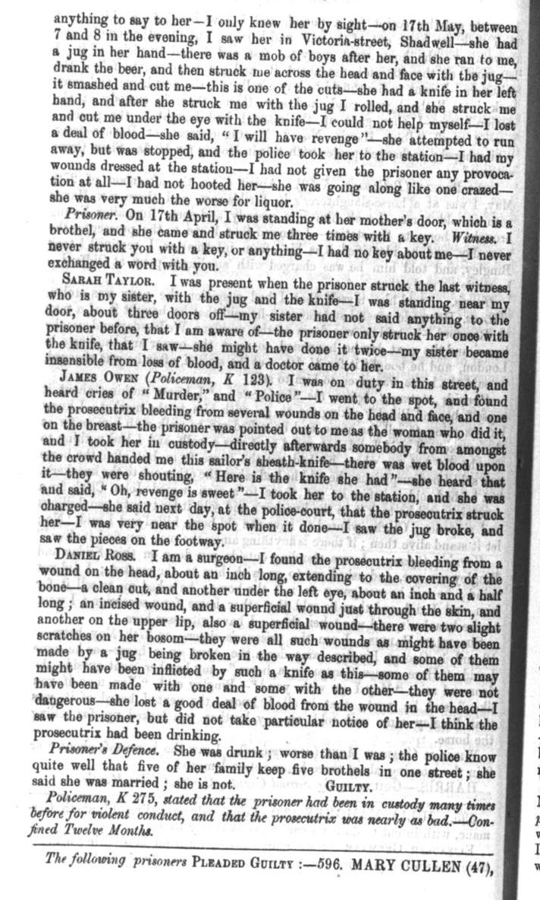
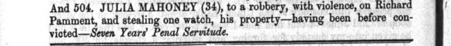
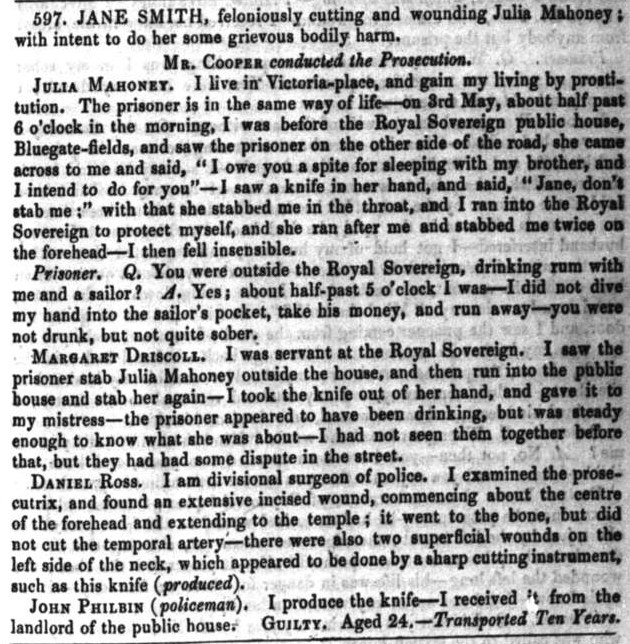

First written down on 17 May 1864, at Victoria Street, Shadwell, London
Julia Mahoney
about 1831, in County Cork to after 27 February 1883
A laundress from Cork who lived in Shadwell, by the London docks. From 1864 to 1883 she was in prison more than she was out of it, twice for seven years. Her prison file lists what she was punished for. In October 1874 it was a disturbance about some shoes she had been given, and the punishment was to accept the shoes.
Julia Mahoney was born in Cork. Two prison doctors wrote it down: one in 1871 wrote “Cork”, and one in 1876 wrote that she was born in County Cork, Ireland.1 What year she was born in, the records do not agree. The ages she gave between 1864 and 1876 point to any year from 1830 to 1837.2 She could read or write only “imperfectly”. She was single, with no children. By trade she was a servant, a laundress and a washerwoman.13
On Tuesday 17 May 1864, between seven and eight in the evening, she was in Victoria Street, Shadwell, with a jug in her hand and a crowd of boys after her. So said Elizabeth Germane, a married woman whose husband was a seafaring man and who had known her “for many years about the streets” by sight. Julia ran to her, drank the beer, struck her across the head and face with the jug, and when it broke, cut her under the eye with a knife. A policeman, James Owen, K 123, heard cries of “Murder” and “Police” and took her. Someone in the crowd handed him a sailor’s sheath-knife with wet blood on it. When the crowd shouted “Here is the knife she had,” he said she answered: “Oh, revenge is sweet.” A surgeon, Daniel Ross, found wounds on Elizabeth Germane’s head, under her left eye and on her upper lip, none of them dangerous. He thought she had been drinking.4
Julia said two things in court. To the witness: “On 17th April, I was standing at her mother’s door, which is a brothel, and she came and struck me three times with a key.” Elizabeth Germane said she had never struck her and had no key. Her defence was thirty-one words: “She was drunk; worse than I was; the police know quite well that five of her family keep five brothels in one street; she said she was married; she is not.”4

She was found guilty. Another policeman, K 275, told the court that she had been in custody many times before for violent conduct, “and that the prosecutrix was nearly as bad.” She was sentenced to twelve months.4 The Proceedings give her age as thirty-three.
Thirteen months after that trial she was in court again, under the name Ann Brown. She was charged with stealing a watch, a chain and two keys, worth two pounds ten shillings, from the person of Edward Heywood. The magistrate at the Thames Police Court sent her for trial on Wednesday 28 June 1865, and on Wednesday 5 July, at the Middlesex Sessions, she was found guilty and sentenced to two years in the House of Correction at Westminster. The gaol’s calendar noted the earlier sentence, and wrote beside it: “alias Julia Mahoney.”5
In October 1867 she was tried at the Middlesex Sessions for taking fourteen shillings from the person of Michael Driscoll, and acquitted on Tuesday 8 October. In March 1871 she was charged with stealing a coat and other things belonging to William Dyer. Her trial was put off, and on Tuesday 11 April she was acquitted.6 Her prison papers, which list her earlier sentences, add one more that April: a month, from the Thames Police Court.7
On Wednesday 7 June 1871 the same police court sent her for trial for robbery with violence on Richard Pamment, and stealing his watch. At the Central Criminal Court, in the session that opened on Monday 10 July 1871, she pleaded guilty to the robbery and to having been convicted before. She was sentenced to seven years’ penal servitude.8

In general, penal servitude was served in the government’s convict prisons, and her licence file follows her through them. I have read it as the Digital Panopticon transcribes it, and the National Archives’ description of it, but not the pages themselves. It gives her height as five feet three, her hair as dark brown and her eyes as dark hazel, and her marks: “Scar on forehead, left eyebrow & wrist, lost front upper tooth.” Under her health the doctor wrote “Typhus fever, Good”; she had had smallpox, and had been vaccinated. Asked for her next of kin, the clerk wrote “Not Visited.” She was entered as a Protestant, and then: “Roman Catholic on reception into Millbank 16.9.71.”1
Five days after her committal, on 12 June 1871, she was punished for “talking on return from exercise and insolence”: ten days on punishment diet, three days without exercise. That September she was admonished for talking at exercise. The file’s list of her prisons gives her occupation at Newgate as laundry and at Millbank and Woking as “knitter and Needle”, later needlework, and her conduct in the first three as good.1

She came into Millbank on Friday 15 September 1871 weighing 124 pounds and left it for Woking on Wednesday 20 November 1872 at 117. She left Woking on Wednesday 2 December 1874 at 112 and went back to Millbank.9 Between those two dates two more offences were written down. On 25 March 1874 she was punished for “causing confusion.” On 24 October 1874 she was charged with “making unnecessary disturbance about some shoes supplied to her.” The punishment column says: “To accept the shoes offered her.”1
On Friday 11 June 1875 she was released on licence, numbered 4859, from Millbank. Her seven years would not have ended until 3 July 1878.10 The file also names East End Finchley for 1875, and does not say what was there.1
Sixteen months later, on Monday 16 October 1876 the Thames Police Court committed her once more. The charge was stealing a chemise worth one shilling, the property of Michael Caldon, and receiving it. She was tried at the Middlesex Sessions before Serjeant Cox and convicted “after previous conviction”: seven years’ penal servitude again, and seven years of police supervision after that. The calendar gives her age as forty-one and her trade as washerwoman.11 The new papers have her as Julia Mahoney, alias Ann Brown, of Shadwell. They say she was born in County Cork and had no children. Asked for her next of kin, she “Cannot give any address.” Her marks were now a scar on the forehead, two scars on the right arm below the elbow, and “lost several teeth.”1
She went from the House of Correction at Westminster to Millbank on Friday 8 December 1876, at 114 pounds, and from there to Woking on Wednesday 20 June 1877, at 117. The doctor called her “Spare but muscular,” fit for any labour.9 At Woking the offences go on:1
- 14 August 1878: “Accidentally breaking a cell pan cover.” No punishment.
- 30 November 1878: “Disobedience of orders.” Admonished.
- 7 February 1879: “Changing her serge skirt and refusing to say with whom she had changed it; also attempting to strangle herself by tying a piece of tape and worsted round her neck.” She was referred to the medical officer, who wrote that day: “She is in a state of despondency and I would recommend that she be placed for the present under medical observation.”
- 9 February 1880: “Receiving a large parcel of food from the Infirmary.” Two days in her cell.
- 5 March 1880: “Quarrelling with D.69 Smith.” No punishment.
- 9 January 1882: “Quarrelling with a great aggravating F.1 Henrally and making use of bad expression.” One day in close confinement, and she lost her berth in the mosaic room.
- 3 February 1882: “Shouting and making a noise in the ward during the morning silence.” Two days in close confinement.
- 19 July 1882: “Striking G.35 K Donovan in the face without any provocation, refusing to be shut in her cell and causing great disturbance.” Three days in close confinement.
The transcription reads the doctor’s word as “wound”; I think he wrote “would”. What the mosaic room was, the record does not say.
On Tuesday 27 February 1883 she was released on licence again, numbered 6672. Her sentence would end on 22 October 1883, and the police supervision would follow it. The licence gives her abode as Shadwell, Middlesex.12 Of the years from her committal in June 1871 to that day, the records leave her outside a prison for at most 493 days.13
That is the last record I have found. No trial at the Old Bailey under her name comes after it, and the National Archives’ catalogue has nothing more.14
Before 1864
There is a Julia Mahoney in an earlier trial, and she may be the same woman. I cannot show that she is.
On Tuesday 3 May 1853, about half past six in the morning, a Julia Mahoney was outside the Royal Sovereign public house in Bluegate Fields. She told the court that she lived in Victoria Place and gained her living by prostitution. A woman named Jane Smith, “in the same way of life,” crossed the road to her and said: “I owe you a spite for sleeping with my brother, and I intend to do for you.” She said she answered: “Jane, don’t stab me.” By her account Jane Smith stabbed her in the throat, followed her into the public house and stabbed her twice on the forehead. The servant of the house, Margaret Driscoll, took the knife from her. The surgeon, Daniel Ross, found a wound from the middle of the forehead to the temple, down to the bone, and two superficial wounds on the left side of the neck. Jane Smith, twenty-four, was transported for ten years.15

For her being the same woman: the name; Victoria Place in 1853 and Victoria Street, Shadwell, in 1864; a wound across the forehead in 1853, and a “scar on forehead” at the top of both her descriptions in 1871 and 1876; and the same surgeon, Daniel Ross, giving evidence in both trials, eleven years apart. Against it: Julia Mahoney is not a rare name; the 1853 report gives her no age; and no record I have read joins the two. The Digital Panopticon does not link them. I think it is probably her, but it is a guess, and nothing in the life above rests on it.
In dates
- About 1831 to 1837. Born, in County Cork.
- 3 May 1853. A Julia Mahoney is stabbed outside the Royal Sovereign, Bluegate Fields. Perhaps her.
- 17 May 1864. Strikes Elizabeth Germane with a jug and a knife in Victoria Street, Shadwell.
- June 1864. Tried at the Central Criminal Court; twelve months.
- 5 July 1865. As Ann Brown, convicted at the Middlesex Sessions of stealing a watch from Edward Heywood; two years.
- 8 October 1867. Acquitted of taking fourteen shillings from Michael Driscoll.
- 11 April 1871. Acquitted of stealing William Dyer’s coat. A month from the Thames Police Court the same month.
- 7 June 1871. Committed for robbing Richard Pamment of his watch.
- 10 July 1871. Pleads guilty; seven years’ penal servitude.
- 15 September 1871. Received at Millbank, where she is entered as a Roman Catholic.
- 20 November 1872 to 2 December 1874. At Woking.
- 24 October 1874. Made to accept the shoes offered her.
- 11 June 1875. Released on licence.
- 16 October 1876. Committed for stealing a chemise worth a shilling.
- October 1876. Seven years’ penal servitude again.
- 20 June 1877. To Woking.
- 7 February 1879. Ties tape and worsted round her neck; put under medical observation.
- 27 February 1883. Released on licence. Last record.
Records that are not her
- A death in 1875. The Digital Panopticon offers a FreeBMD death record for a Julia Mahoney in 1875 as a possible match, on the name and the birth year. It cannot be her: she was convicted again in October 1876, and the papers of that conviction carry her 1871 sentence. I could not read the FreeBMD entry itself, because the site now sends programs to a gate.
- A marriage in India. A Julia Mahoney married George Silvester of the Royal Artillery at Bangalore on 26 September 1865 (WO 69/573/7). Julia was then two months into two years in the House of Correction at Westminster.
- A Julia in Cork. A Greenwich Hospital School application names a Julia among the brothers and sisters of Silvester Mahoney, born at Cork in 1821 (ADM 73/288/97). Nothing ties that family to her.
Where the records disagree
- Her age. See the note on her ages: thirty-four in 1865, 1867 and 1871 alike.
- Her religion. Protestant at committal in 1871, Roman Catholic at Millbank three months later, and Roman Catholic in 1876.
- The days of her trials. In 1865 the calendar gives 5 July and her licence file 3 July. In 1876 the calendar gives 27 October, the licence 28 October, and the National Archives 23 October. In 1871 her 1875 licence gives 3 July and everything else 10 July. Where a record gives the day a session opened, I think that is the difference.
- A name. The 1871 plea is transcribed “Richard Payment”; the printed page has “Pamment”.
- A weight. On leaving Millbank in June 1875 she weighed 118 pounds in one field of the same record and 110 in the next.
Not yet known
- When and where she was born, and when she came to London.
- Whether the Julia Mahoney stabbed in Bluegate Fields in 1853 was she.
- What the pages of PCOM 4/48/29 say beyond the transcription, and whether it holds a photograph.
- What “& 7 times” refers to in her list of previous convictions, and what the Thames Police Court’s own records hold.
- What she was doing at East End Finchley in 1875.
- What became of her after 27 February 1883: whether she was convicted again, and when she died. The criminal registers to 1892 (Ancestry) and the deaths in the General Register Office’s index are the next places to look.
- Whether she appears in the censuses of 1861 and 1871 in Shadwell or St George in the East, and in 1881 at Woking.
Everyone named here
- Elizabeth Germane, wife of a seafaring man, whom she struck in May 1864, and Sarah Taylor, her sister.
- James Owen, policeman K 123, who took her in 1864, and the policeman K 275, not named, who spoke against both women.
- Daniel Ross, surgeon, who gave evidence in 1853 and in 1864.
- Edward Heywood, whose watch she was convicted of stealing in 1865, and W. Partridge, the magistrate who committed her.
- William Henry Bodkin, Assistant Judge at the Middlesex Sessions in 1865.
- Michael Driscoll (1867) and William Dyer (1871), whose charges against her ended in acquittals.
- Richard Pamment, robbed of his watch in June 1871.
- Michael Caldon, whose chemise she was convicted of stealing in 1876, and E. W. Cox, Serjeant-at-Law, who tried her.
- D.69 Smith, F.1 Henrally and G.35 K Donovan, women at Woking known here only by their numbers.
- In 1853: Jane Smith, who stabbed a Julia Mahoney and was transported for ten years; Margaret Driscoll, servant at the Royal Sovereign; John Philbin, policeman; and Mr Cooper, who prosecuted.
If this is your family
If Julia Mahoney, or anyone named on this page, belongs to your family, the library would like to know what the family remembers: a story, a photograph, a name written in a Bible. It will be kept here beside what the records say, and marked as memory.
Written by Claude, an AI made by Anthropic, on 24 November 2026, from transcriptions of the records. No person has yet checked it against the original documents. Correct this life, or check it against the originals.